跟着小林，把一关从头走到尾
这一份把前两份（「互动组件收敛」和「组件搬进庭院」）、我们后来几次的讨论，还有你新提的要求合成一本：每一关都要连着真实世界。它放在项目文件夹里，双击就能打开，3D 不联网也能玩；也可以直接交给别的 AI 照着做。
这份报告怎么读
还是那位虚构的新学员「小林」。这次，小林从头到尾上一遍新的第一关；后面换一位学写 App 的「小周」，上两关专业课。
每一站都按同样的五步来讲：
- 现在是什么样：真实截图，红色数字告诉你看哪儿。
- 小林会怎么想：一个新手的第一反应。
- 问题出在哪：一句话说清。
- 建议改成这样：新样子的截图或草图，绿色是新加的。
- 为什么：打个比方，再讲背后的道理。
最后有 10 件事要你拍板，点一下就行，底部会生成一行字，复制发给我。
这一套一共 5 页，都在同一个文件夹里
小林（虚构）。35 岁，在公司做行政，想学会用 AI 干活。怕问错、怕被笑。每天通勤路上有 10 分钟，主要用手机。小时候玩过小霸王、诺基亚上的贪吃蛇，也在 QQ 上玩过连连看。
如果你只有一分钟
- 叫法统一：小林手上做的动作，统一叫「互动组件」。课里只用 9 种：选一个、分一分、连一连、排一排、点一句、点图、拧一拧、发出去、自己做。「点一句」和「点图」要不要合成「点一处」，两种写法并排放在第 0 站，等你定。
- 一关由五样东西组成：一件真事开场；猜、跑、看、改、做五段；一个 3D 舞台；一个 3 到 6 道题的 3D 小回合；学完带一样东西回岛上。
- 真实世界放三处：开场讲一件真事；等 AI 回答的几秒放一个真数字；学完放一条「你知道吗」。每条都查过出处，写明哪天查的。代码课用真项目的代码，和网站真在用的写法。
- 3D 是舞台，字和按钮是平的：一关只载入一次；答题还是点平面按钮，舞台跟着起反应；手机画不出 3D 就换成静态图，课照样上完。
- 新第一关连课文都写好了，能玩。专业课也做了能玩的样子，说明这 9 种够用：专业课要加的是「材料」（代码、运行记录、开关、代码小镇），不用加新的互动组件。
- 现在不改产品。Codex 正在优化整个 App。等它做完，照「先后顺序」一步一步来：先删旧课旧组件，再做第一关。
从头读完大约 30 分钟。只想先玩：打开新第一关。
先对一遍：你最近说的，我是这样听懂的
都是你 9 月 28 日说的。左边是我理解的意思，灰字是它落在这份文档的哪里。听错了，告诉我第几条就行。
- 1「舞台加平面按钮、3D 小回合、带回岛上」这个方向，起码给了你信心。这份按它写到底。要你正式点头的是第 A 件。
- 2现在不能动产品：Codex 在优化 App 的方方面面。这一轮只写文档和样机，产品代码一行没碰。先后顺序的第 1 步就是「等 Codex 做完」。
- 3叫「九种互动组件」，不叫「手势」，问我的看法。我同意，还建议再配两个词，各管一件事，见下面「三个词」。
- 4课要连着真实世界：现在的第一关缺真实的案例和用法，要加上，放在哪一段可以商量。第 1 站专门讲，第一关样机里放了三处。
- 5代码课用真仓库的代码、真网站的代码。第 5、6 站；专业课样机里的代码一个字没改，行号能对上。
- 6AI 应用课用真实用法、相关新闻、前沿的事，甚至有趣的小知识，增加可信度和兴趣。第 1 站的四类料、三个位置；每条都核对了出处。
- 7把两份方案和最近的讨论合成一份，放在本机的项目里；云端下载下来 3D 用不了。就是这个文件夹。3D 打包成了一个不用联网的文件，双击页面就能玩。
- 8决定过的事都记进去；跳出框架，给另一种办法；写完再改两遍。「你已经拍板的」「换个思路」两节；附录写了两遍各改了什么。
- 9开工前有不懂的先问。我问了四件，你答：只提交这个文件夹、先不推送；第一关连课文一起写；真实案例每条都核对出处；「点一处」两种写法都写进来，你看了再定。
三个词（回答第 3 条）
互动组件：小林的手在做的动作，比如「分一分」。一共 9 种，固定不变。
材料：动作作用在什么东西上，比如一张照片、一段代码、一份运行记录。材料可以一直加。
舞台：屏幕上面那块 3D 的庭院，一关一个。
岛上那些计时、计分的，另外叫游戏组件，不算在 9 种里。「手势」这个词不再用：它听起来像在屏幕上划的方向，容易让人以为要做滑动识别。
你已经拍板的（这份都照着做，不再重新讨论）
带日期的是你的原意；「以前就有的」是项目里早就定好的规矩。
- 9 月 27 日批准第 7 版学习旅程：岛会跟着学的东西长大，有宝箱和徽章。这份的「带回岛上」接着它往下做。
- 9 月 30 日拍板：A1 B1 C1 D2 E3 F1 G3 H1 I1 J2。和推荐不同的是：写课规矩等第 1–3 关手工做完再改；第一关课文重写；删除分批、边删边重做；「换个思路」先试教会小兔子。
- 9 月 28 日课以互动组件为主。第一关当样板，然后第二关，再其余的。
- 9 月 28 日每个互动组件都要有 3D 的样子，要有庭院感、可爱，借经典游戏的亲切感，而且真能学到东西。
- 9 月 28 日3D 一定要有，但一个 3D 场面至少装 3 到 5 道题，否则不值得等它加载；课里不是游戏，不计时。
- 9 月 28 日第 1、2 版的老课，连同第 3 版第一关现在的内容，都可以整个删掉，按新格式重做；长的课拆成 3 到 5 关。
- 9 月 28 日收成 9 种以后，退下来的组件任何一关都不许再用，最多留截图参考；让写课的 AI 一眼看清能用什么。
- 9 月 28 日现在不改产品；叫「互动组件」；每一关要连着真实世界。
- 9 月 20 日「猜」猜的是怎么用，不是猜 AI 会怎么说。新第一关和专业课的「猜」都照这个写。
- 9 月 23 日否决过「飞机当主角」的玩法。这份里纸飞机只是道具，小兔子扔它。
- 以前就有的能读的字永远是真的字，不画进 3D（全公司的规矩）；打分分三档：先用固定规则，再用小模型，最后才用大模型，而且要计费；正式上线要等第 1 到 3 关做成样板。
规矩对齐了。出发之前，先把工具箱理一遍。
我们要走的路线
先理工具箱，再跟着小林走完第一关的四站，然后换小周上两关专业课，最后回到岛上。橙色的两站最要紧，时间紧先看它们。
- 0先理工具箱：67 种收成 9 种种类太多，学的人和写课的 AI 都挑花眼
- 1开场：真实世界之门整关只有一句「真实用法」
- 2猜和跑：一关一个 3D 舞台全是平的卡片；等 AI 的几秒只能干等
- 3看：3D 小回合6 张卡一口气做完，却看不见结果
- 4改和做：带东西回岛上学完，作品就不见了
- 5专业课·代码：真项目、真网站「会停下来等」只讲不看
- 6专业课·架构：代码小镇架构是一张图，课文只能一段段讲
- 7回到岛上：游戏组件岛上只有一种游戏
走完以后是：改完的样子（能玩）、删什么留什么、换个思路、拍板、先后顺序、你可能会问、一个都没丢的对照表。
先理工具箱：67 种收成 9 种
一关里小林手上能做的动作，就是互动组件。动手改课之前，先看看现在的工具箱里有多少种。
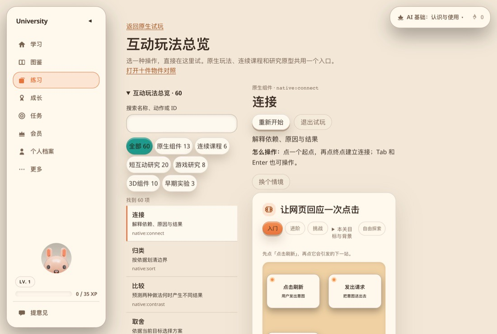
1 2 3- 1面板里有 60 种。加上课里另外写的几份，一共 67 种，每种都在「旧组件相册」里有一张截图。
- 2分了好几类：原生、连续课程、短互动研究、游戏研究、3D、早期实验。同一件事常常有好几种做法。
- 3每一种还分入门、进阶、挑战几档。「把东西分成两堆」这一件事，就有 5 种长得不一样、规矩也不一样的写法。
上一关是拖卡片，这一关又变成盖章……每次都要重新学怎么玩，我到底是在学 AI，还是在学玩法？
种类太多。小林每一关都要重新适应玩法，力气花在了玩法上；写课的 AI 也会挑花眼，同一件事这次用这个、下次用那个。
课里只用这 9 种（和你上一轮看过的一样）
「点一句」和「点图」：两种写法，等你定（第 B 件）
写法一：分开，9 种
一种点字，一种点照片。名字一听就懂。
担心：专业课里还要「在代码里点出一个词」「在小镇图上点出一座房子」。到时候要么再加第 10 种，要么硬塞进这两种里。
写法二：合成「点一处」，8 种（我推荐）
手上的动作都是「在材料上点出一处」。点的是字、照片、代码还是小镇图，由材料决定。
好处：专业课不用加新的；写课的 AI 只记一条规矩。第一关里还是一次点字、一次点照片，小林看不出区别。
组件少，材料多
67 种里其余的去向：合进这 9 种的，样子可以留，规矩只剩一套；其余的删掉代码，只留截图在旧组件相册里当参考，任何一关都不许再用。
打个比方
好厨师常用的刀就三四把。今天切土豆，明天切鱼，换的是菜，刀不换。刀用熟了，心思才都在菜上。
背后的道理
动作的种类少，人才能把力气花在要学的东西上。变的是材料，不变的是动作。
工具箱理好了。周一早上，小林打开新的第一关，第一眼看到的是一件真事。
开场：真实世界之门
你说现在的第一关缺少真实世界的东西。这一站讲三件事：放在哪、放什么、怎么保证是真的。
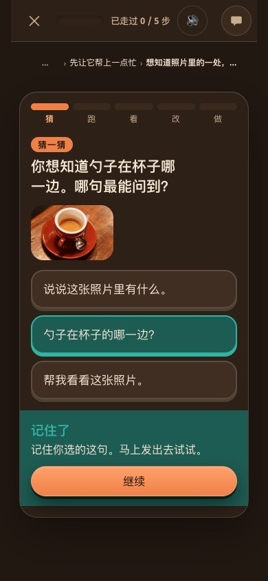
1 2- 1一打开就是「猜」。整关提到真实世界的，只有课文开头一句：「真实用法：Be My Eyes 让看不清的人拍张照片，请 AI 说给他听。」进了练习以后，一次也没再提。
- 2练手用的是一张咖啡照片。谁在真的这么用，这一屏没说；学完那一屏只有一句「下次看不清菜单、路牌上的小字，就这样问」。
问 AI 照片里的勺子在哪边……谁会真的这么用？学这个有什么用？
小林不知道谁真的在用。学完也没带走一件「原来真有人这么干」的事，回头跟同事也说不出什么。
开门：一件真事
一两句话，讲真的人用这件本事做了什么。和这一关要学的是同一件事。
一个真数字
放在等 AI 回答的几秒里。本来就是空着的时间，不抢学习的时间。
你知道吗
一条研究或新闻，正好说明今天学的那句话为什么要紧。
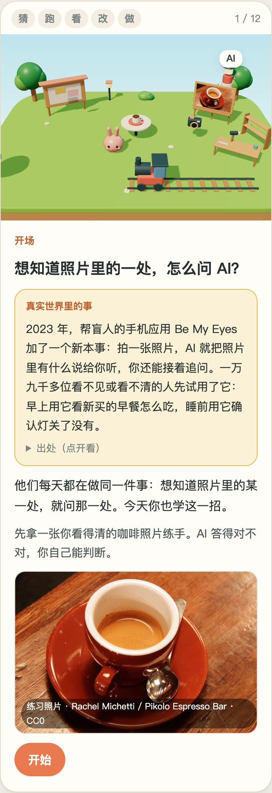
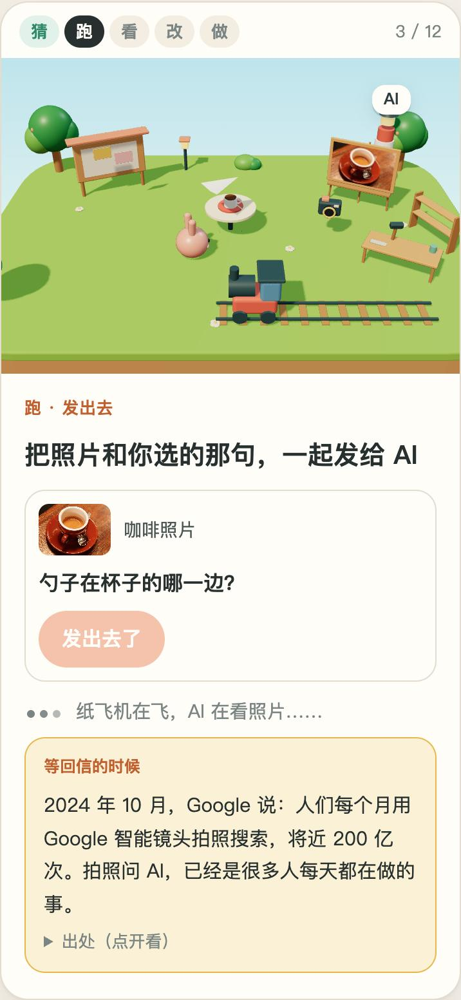
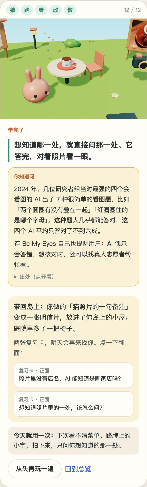
新第一关里的三条，原话是这样的
料从哪来：四类，外加代码课的两类
四条规矩
- 1必须和这一关要学的那句话有关。好玩但无关的，不放。
- 2每条都写出处、哪天查的、到哪天要再查。数字写清楚是谁说的；公司自己说的，就写「这是它自己的数字」。
- 3一关最多三条，第二次「发出去」不再放，免得抢戏。
- 4查不到一手出处的，不放。宁可少一条，不放一条讲不清来源的。
打个比方
驾校教练教倒车入库，先说一句「上周有个学员在商场停车场蹭了柱子」。一件真事，比十句道理更让人想好好学。可要是教练讲起他去年钓了多大的鱼，你就走神了。
背后的道理
真事让人知道「学这个有用」。可有趣但和要学的无关的东西，会把注意力抢走：一份汇总了 58 个研究、七千五百多名学生的分析发现，加了这类「好玩但跑题」的内容，学得反而更差。所以每条真事都要扣住这一关的那句话。
1第一关开场那件真事，你觉得够不够打动人？
真事讲完，小林点「开始」。这时候，整座庭院已经加载好了。
猜和跑：一关一个 3D 舞台
你担心 3D 在手机上字小、加载慢，又觉得有了 3D，课就完全不一样。这一站讲怎么两头都顾到。
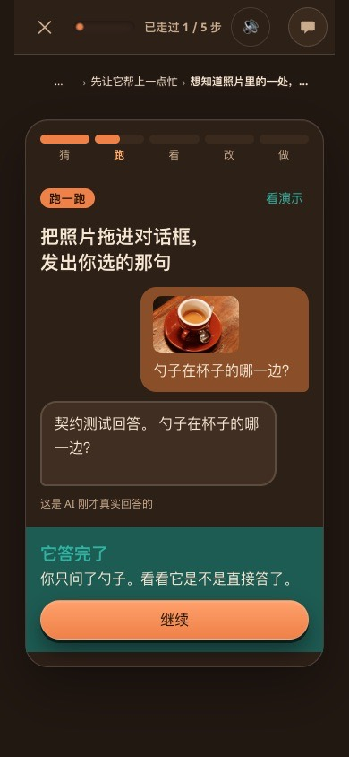
1 2- 1整屏都是平的：一张卡片、一段字、一个按钮。和别家的学习 App 看不出区别。
- 2AI 回答要等几秒。这几秒里，按钮上写着「AI 正在回答…」，旁边能取消；除了等，没有别的可看（照着代码看的，截图拍的是等完以后）。
发出去了……怎么还没好？是不是卡住了？
课长得和别人一样，记不住；等 AI 的几秒只能干等，容易以为卡住，或者走神去刷别的。
（小兔子扔纸飞机）
- 1一关只有一个舞台，开场时加载一次。换一步，镜头转过去，不重新加载。
- 2字和按钮永远是平的。能放大，读屏软件能读，中文输入法照常用。答题还是点按钮，舞台跟着起反应。
- 3等 AI 的几秒，纸飞机在飞，下面放一个真数字。回答回来，飞机也飞回来。
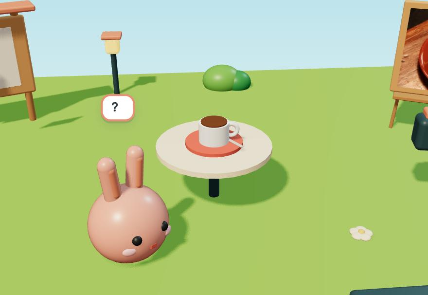
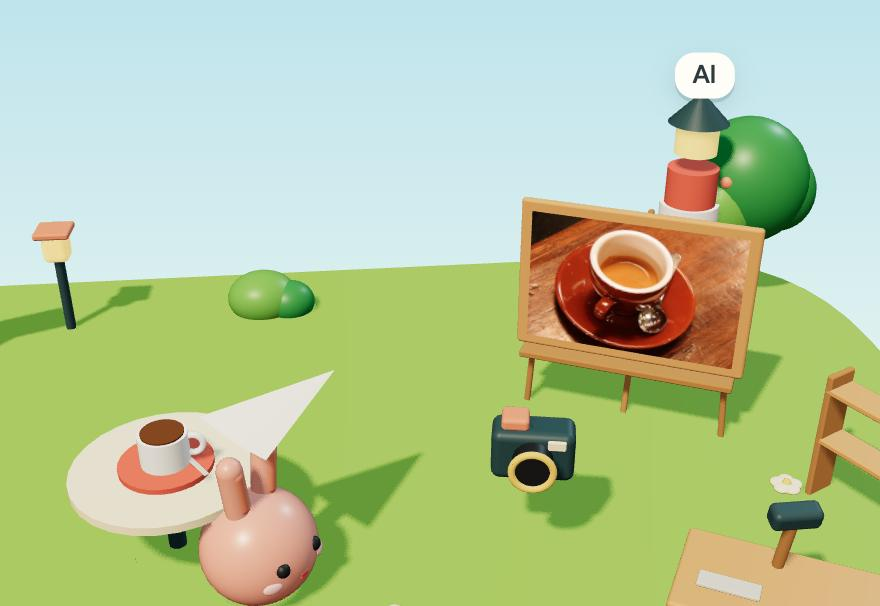
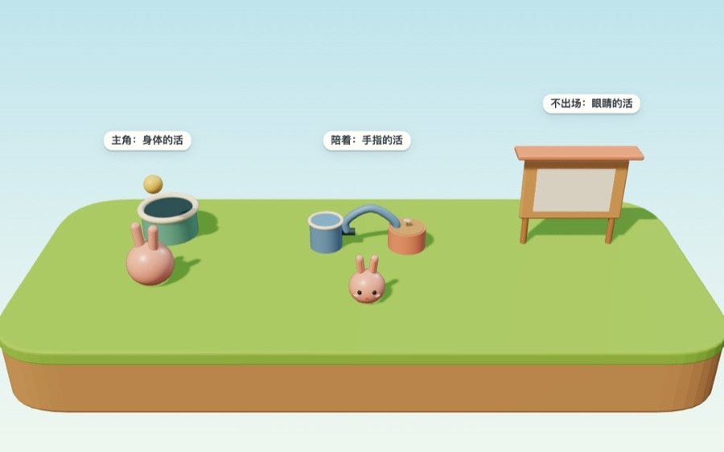
手机画不出 3D 时，舞台换成一张静态图，课照样能上完（样机里已经这样做了）。
打个比方
电视台的演播厅：布景搭一次，一晚上几个节目轮着录；字幕永远印在画面最上层，布景再花哨，也不挡字。
背后的道理
加载一次、用一整关，手机才吃得消。画面光是好看，研究发现会让人更喜欢，却不一定学得更好；要让画面跟着你的每一次作答起反应，它才和学习连在一起。多邻国的角色就是这么做的：你答对答错，它当场有反应。
回答回来了。第三段「看」，小林要连着判断 6 张卡，正好够做一个 3D 小回合。
看：3D 小回合
你说过：一个 3D 场面至少装 3 到 5 道题，不然不值得等它加载；而且这不是游戏，不计时。
 1
2
1
2
- 1已经会数「连对 6」。有一点游戏的味道了。
- 2放对放错，只是一行字和按钮颜色变一下。6 张卡做完，眼前什么都没留下。
挺好懂的。就是……有点像在做卷子。
6 张同类的卡，正好是一组；可它和别的步骤长得一样，放对放错没有看得见的结果，也看不出和岛上的游戏有什么关系。
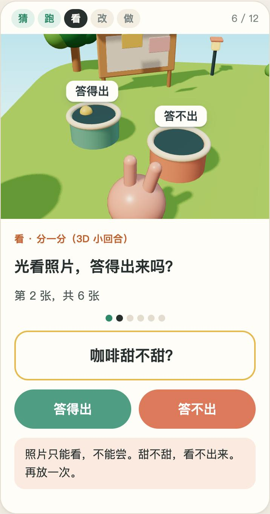
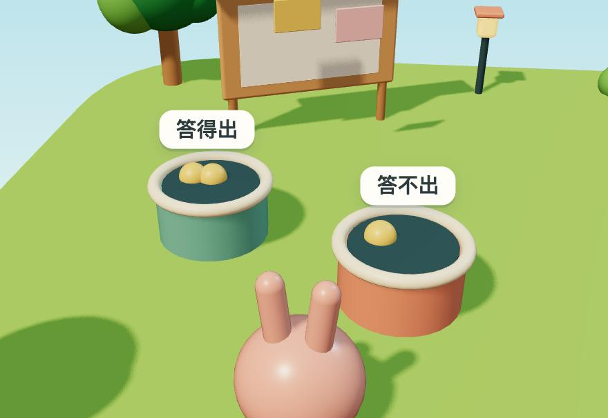
- 1什么时候做成回合：同一种判断，3 到 6 道。一关最多一个回合，通常放在「看」。
- 2怎么答：点平面按钮，小兔子替你扔。不计时，不掉心。
- 3放错了：球弹出来，下面说为什么；这张卡改到对才算过（第 H 件要你定）。
- 4和岛上的关系：还是这两个篮子。到了岛上的庭院拦截，同一类题限时来，小林一眼认得。
打个比方
游乐园的投篮机：一局投好几个球才过瘾，只让投一个球，没人会去排队。
背后的道理
同一种判断连着做几次，手感才出来；球进篮子，人才知道自己对不对。3D 场面等一次，用好几道题，也对得起加载的那几秒。
分完了。第四段「改」，小林要自己拼一句新的问法；拼对了，最后还要带点东西回岛上。
改和做：带东西回岛上
一关学完，东西去哪了？这一站讲让学过的东西「留下来」。
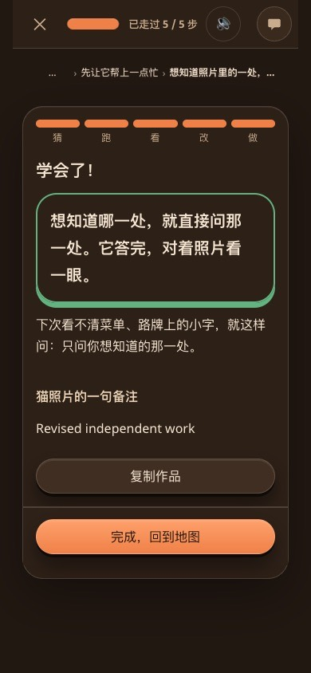
1 2- 1作品只剩一行标题「猫照片的一句备注」，下面一个复制按钮。
- 2一路上的小毛病：这里露出一行英文，中文页面上不该有。改课时顺手修掉。
做完了……然后呢？我写的那句备注去哪了？
学完就结束了，作品没地方放；回到岛上，看不出这一关学过什么。
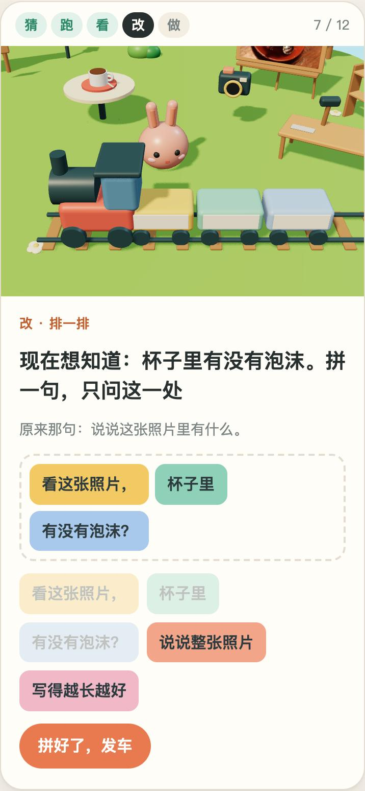
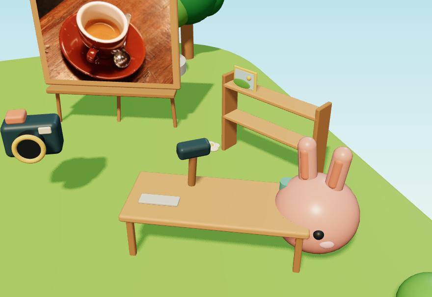
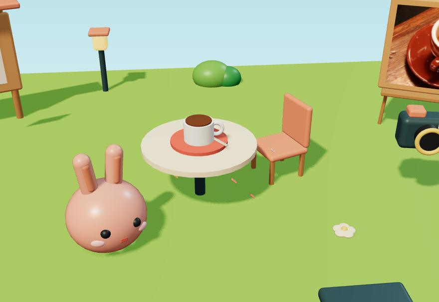
- 1作品变成岛上的一样东西。第一关是明信片；以后每关一样，岛就这样长大（接你 9 月 27 日批准的第 7 版旅程）。
- 2开宝箱，拿两张复习卡。明天再来找你，卡上的话和课文一样。
- 3最后一句「今天就用一次」。下次看不清菜单、路牌上的小字，拍下来，只问那一处。
打个比方
小时候集贴纸：每做完一件事，往本子上贴一张。翻本子的时候，就想起自己做过什么。
背后的道理
看得见的积累会让人愿意回来。东西摆在岛上，比一行「已完成」更像是自己的。
第一关走完了。停一下，先看看走过的路。
走到一半，小结一下
一关由五样东西组成：一件真事开场；猜、跑、看、改、做五段；一个 3D 舞台；一个 3D 小回合；学完带一样东西回岛上。
三条不变的规矩：字和按钮是平的、真的；每个 3D 动作都有一个普通按钮能做同样的事；课里不计时，比快的只上岛。
真实世界放三处：开门、等的时候、学完的「你知道吗」。每条扣住这一关的那句话，每条都有出处和日期。
后半程换一个人，看看这套办法能不能教真项目里的代码和架构。
专业课·代码：真项目、真网站
换一个人：小周（也是虚构的），25 岁，刚开始学写 App。他在学「等待与失败」的第一关：写了「等一下」的那一行，程序会停下来吗？
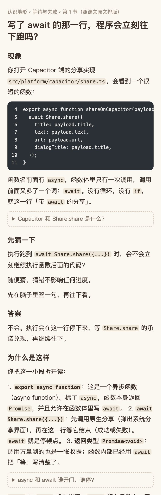
1 2 3- 1一开场就是文件名和 8 行代码。代码是真项目里的，这点很好。
- 2课文里「先猜一下」只是一句问话，下一段就是答案。
- 3「为什么」是一大段字，讲「会停在这一行等」。小周没亲眼看它停过。
代码我看得懂一半……「停下来等」到底长什么样？我想亲眼看它停一下。
「会停下来等」只讲不看；猜完马上看到答案，没有一步是小周自己动手的。
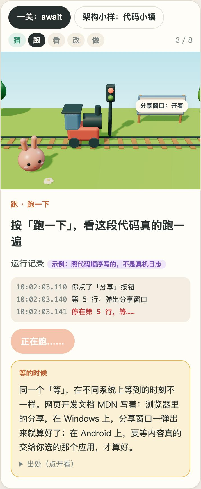
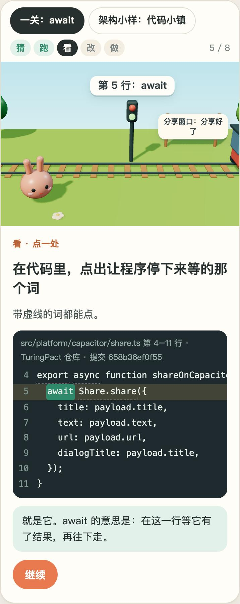
- 1开场：「你在 App 里点分享，会弹出一个窗口等你选。下面 8 行就是管这个按钮的代码，一个字没改。」
- 2猜（选一个）→ 跑（跑一下）：放一段录好的运行，不花钱，每次都一样。
- 3看（排一排、点一处）：把四件事排好先后；在代码里点出让它等的词。
- 4改（拧一拧）：拨一个开关，把「等」拿掉，再跑一遍：火车不停，按按钮的地方以为「分享好了」，其实你还没选。这个后果来自真代码。
- 5做（自己做）：换同一个项目里另一段没见过的真代码：它会不会停？在等什么？
- 6真网站的写法：同一个项目的网页版，用的是浏览器给所有网站的分享功能；它在不同系统上「等到」的时刻不一样，公开的网页开发文档写着。学完页告诉小周：「等一下」这个写法是 2017 年才正式进 JavaScript 标准的。
能玩：专业课样机的第一个标签。
代码在仓库里的位置（给动手的人）
分享：src/platform/capacitor/share.ts 第 4–11 行；按按钮的地方：src/platform/index.ts 第 18–24 行；自己做用的：src/platform/storage.ts 第 53–57 行；网页版：src/platform/web/share.ts 第 28 行。仓库是 TuringPact，提交 658b36ef0f55。
打个比方
学开车，看教练踩十次刹车，不如自己踩一脚。代码也一样：亲手把「等」拿掉跑一遍，比读三段解释记得牢。
背后的道理
专业课要加的是材料，不是新的互动组件。小周的手在做的（找出那个词、拿掉它、看后果），正好是要学的那件事。研究发现，玩法本身就是要学的内容时，人学得更好，也更愿意玩下去。
一行代码讲清楚了。可是一个项目有几百个文件，架构怎么教？
专业课·架构：代码小镇
架构讲的是「谁连着谁、数据往哪走」。小周正在学的另一关，问的是：同一句「存一条记录」，在手机和电脑上为什么存到不同的地方？
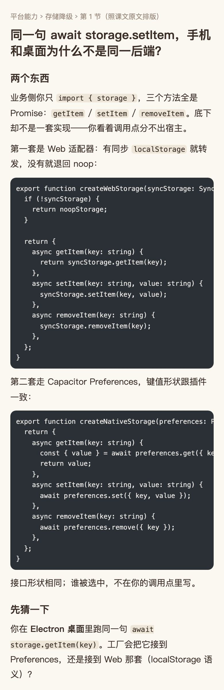
1 2- 1开头是两大段代码，一段管网页，一段管手机。
- 2猜的是「电脑桌面版走哪条路」。问得很好，可小周得先在脑子里把三条路画出来。
手机、网页、桌面……我脑子里要同时装三条路，有点绕。
架构本来是一张图，课文却只能一段一段讲，小周得自己在脑子里画地图。
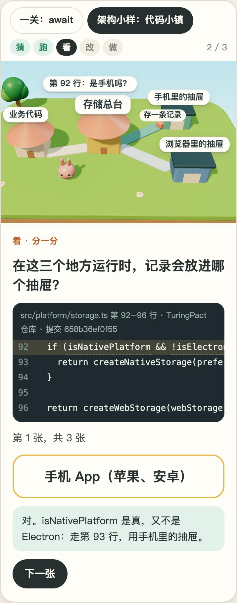
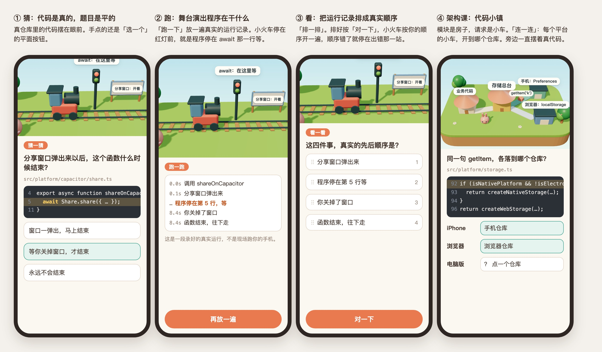
代码小镇的画法（每门专业课都用这一套）
最后一张卡「电脑桌面版」最容易看错：代码写着「是手机、而且不是桌面版」才走手机抽屉，所以桌面版走的是浏览器抽屉。小周把卡放错，小车不会动，下面提示他去看那半句。
能玩：专业课样机的第二个标签。
打个比方
地铁线路图：没人记得住地铁在地底下怎么拐弯，可看一眼线路图，就知道在哪换乘。
背后的道理
结构用画的，细节用读的。房子和小车帮人记住「谁连着谁」，旁边的真代码保证它不是编的。
课里的都走完了。周末，小林回到岛上。
回到岛上：游戏组件
游戏组件和课里的互动组件分开：它们计时、计分，放在岛上，题目从课里来。你提过的小蜜蜂、贪吃蛇、俄罗斯方块，都放在这里。
 1
1
- 1每次都是扔球进篮子。它只练「分一分」这一种判断。
每次都是扔球……玩几次就腻了。
岛上只有一种游戏，只练一种判断；「连一连」「排一排」学过的东西，岛上没地方练。
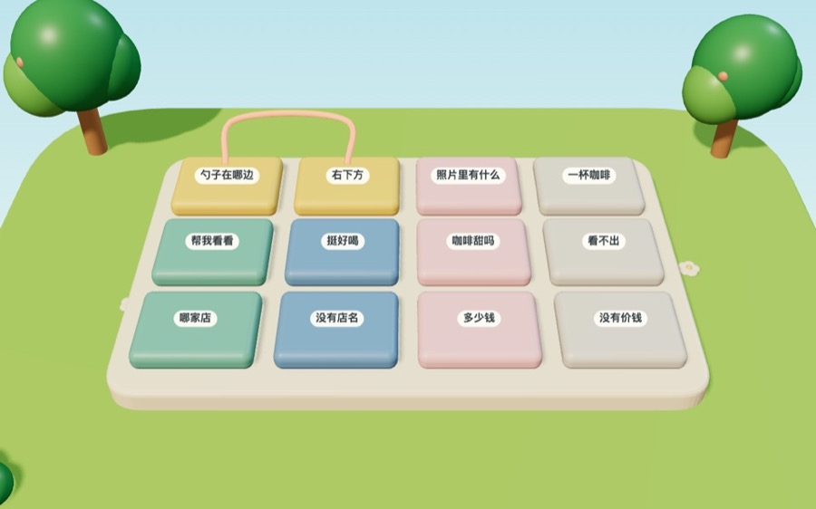
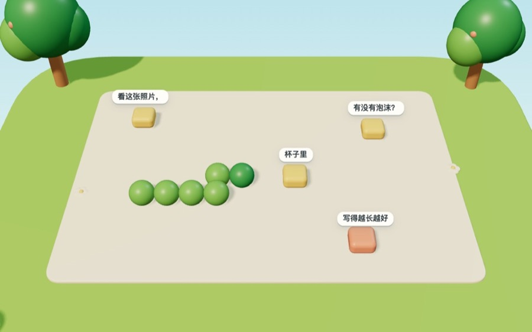
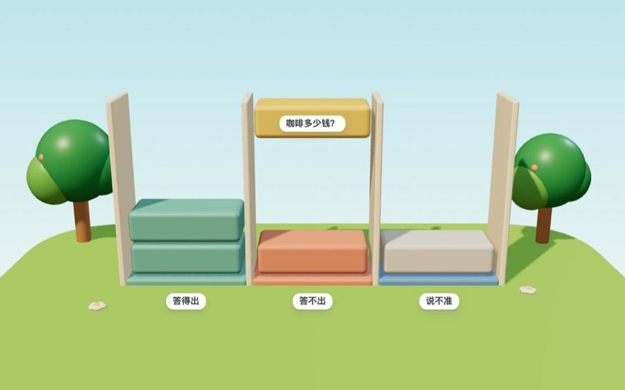
题目都从学过的关里来，不另外编；分数不算成绩。一局要十几分钟的长游戏（值班室、塔防），等课多了再说。
打个比方
学钢琴：先慢慢弹，每个音弹对；熟了，再开节拍器加速。没人第一次看谱就开最快的节拍器。
背后的道理
第一次学的时候一快，就只能猜；学过的东西拿到岛上限时玩，才是在练。课里慢，岛上快，用的是同一套玩具，小林一眼认得。
改完以后：整关的舞台，亲手转一圈
下面是新第一关的 3D 舞台，和样机里是同一个。点按钮，镜头会像上课时一样转过去。它不联网，也不调用 AI。
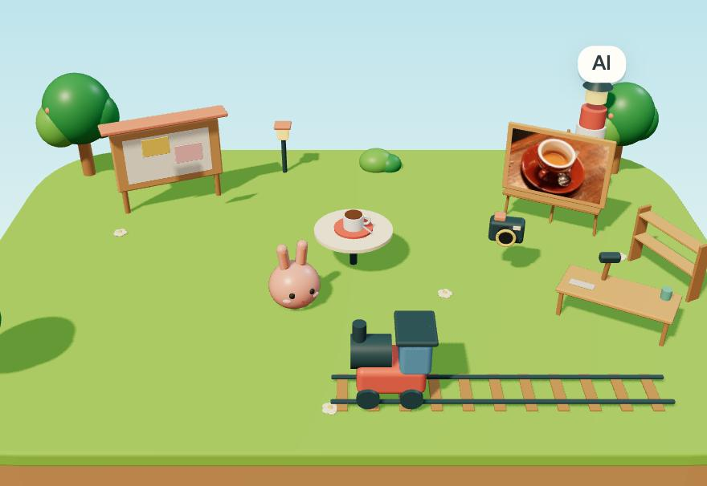
要上一整关，打开新第一关样机。
9 种互动组件，各自在庭院里的样子
这是上一份「组件搬进庭院」里每种推荐的那个样子。新第一关的舞台就是用它们拼起来的。点「玩一下」，在下面打开。
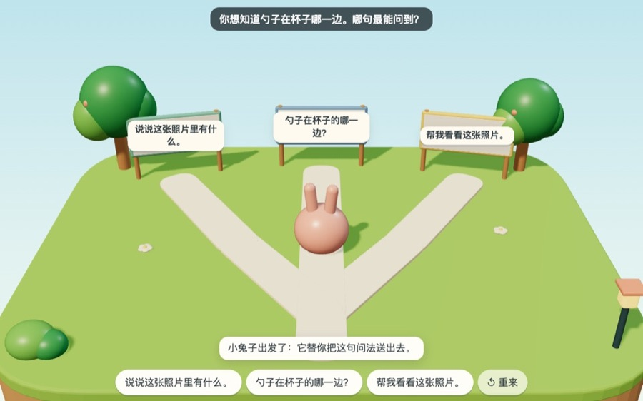
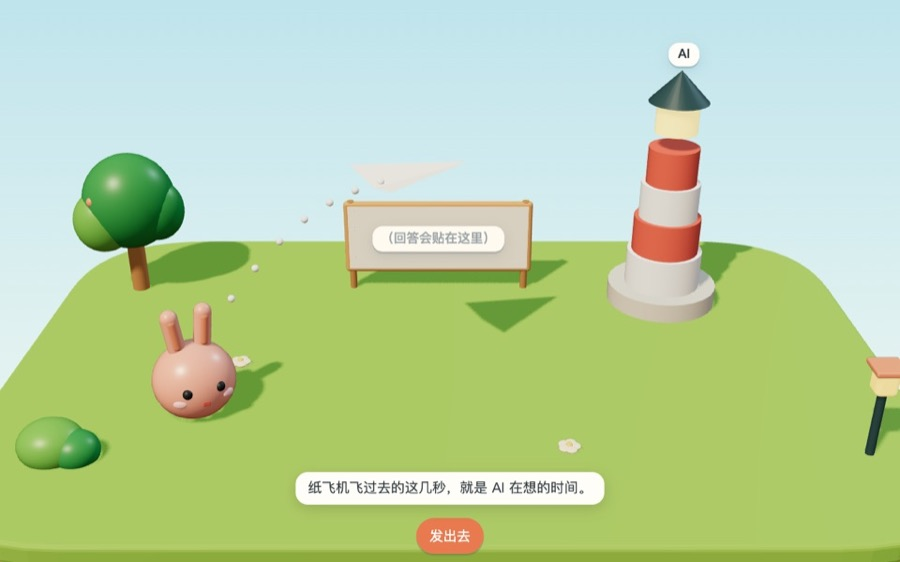
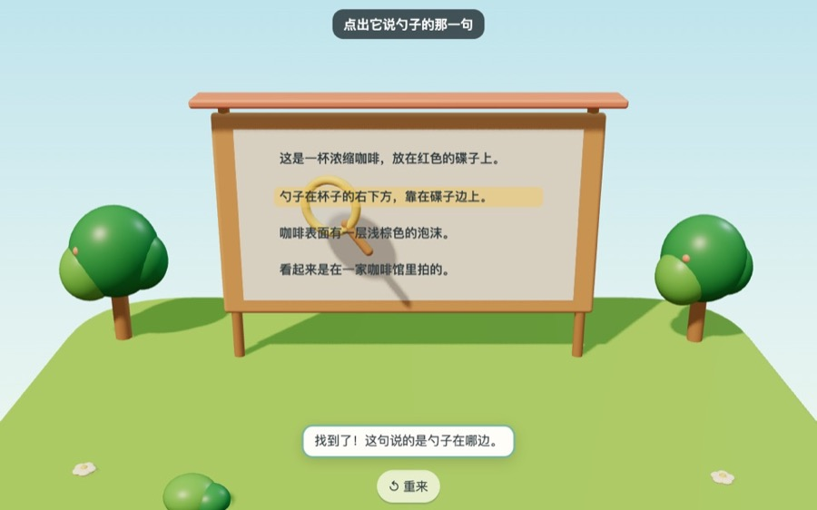
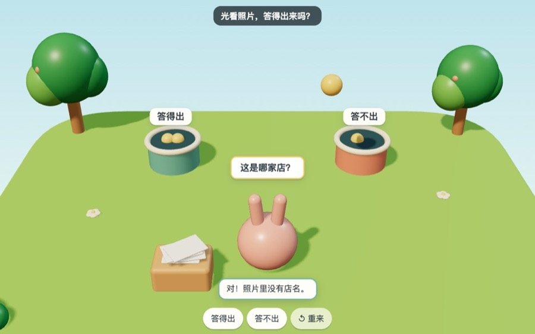
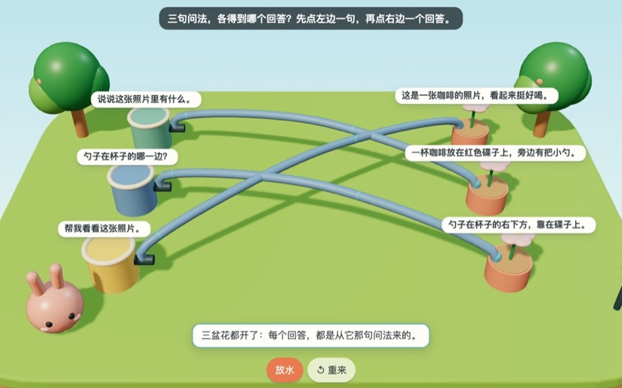
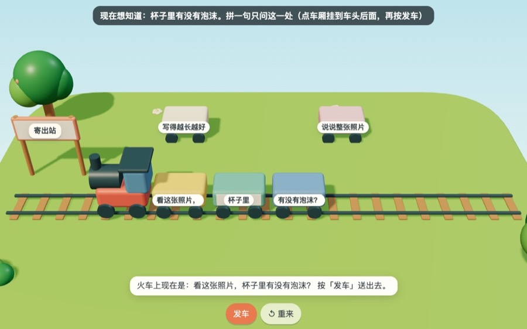
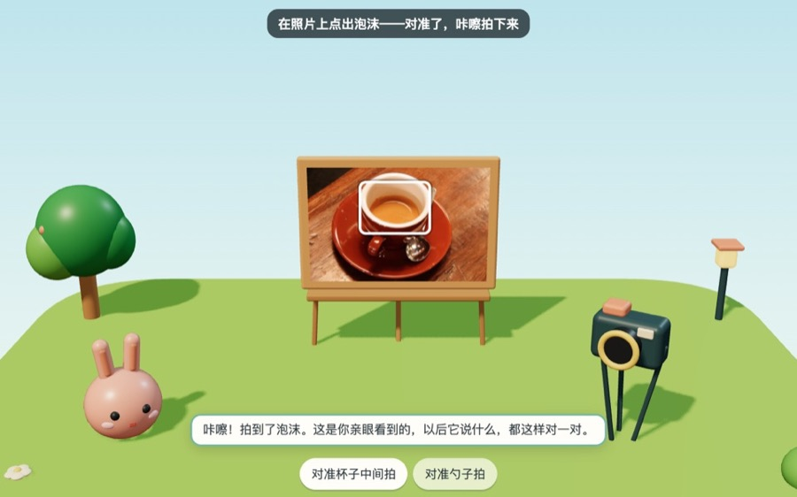
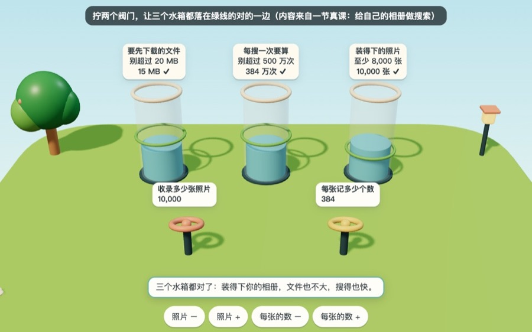
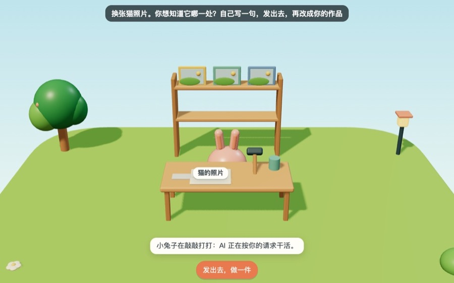
删掉什么、留下什么（等 Codex 做完再动手）
照你 9 月 28 日说的：老课和退下来的组件整个删掉，用新格式重做。下面是删的范围，和删之前要先挡住的三个坑。
老课
第 1、2 版的老课，和第 3 版第一关现在的内容。长的课拆成 3 到 5 关，用新格式重写。
退下来的组件
不在 9 种里的，代码删掉。截图和一句说明留在旧组件相册里当参考。任何一关都不许再引用它们。
找得回来
删之前打一个备份包；代码历史里也一直在。以后真要用某个旧点子，照 9 种之一重做，不把旧代码救回来。
删之前要先挡住的三个坑
- 1自动测试拿上架的课当测试材料。直接删课，整套浏览器测试会跑不起来（以前真出过）。先给测试换好材料，再删课。
- 2别的地方还在引用。课程目录、复习卡、岛上的游戏题目都从课里取。删之前先列出「谁在用这一关」，一个个改掉。
- 3正在学的人。删之前确认线上有没有人学到一半。有的话，他的进度要能接到新课上，或者至少不报错。
写课的 AI 同时要改：它的说明书里只列 9 种互动组件和材料清单；真实世界三处、每条出处核对，写进它的规矩。细节在执行规格。
换个思路：另外几种办法
你让我跳出框架想一想。下面四种，都能和上面的方案一起用，也可以单独试。我最推荐先加第二种，因为最省事。
一、教会小兔子
「看」那一段，换个角色：小兔子来问 AI，问得不好；小林帮它改。小林从「被考的人」变成「教别人的人」。
凭什么：2009 年斯坦福的一项研究让学生教一个电脑里的角色，学生为它学得比为自己学更用心，花的时间更多，学得也更好；成绩原本靠后的学生，差别最明显。研究者管这叫「教别人效应」。
担心：要给小兔子写「犯错的样子」，写课的活多一点。适合先在第二关试。
二、今天就用一次（推荐先加）
每关最后给一张小任务卡：今天在真生活里用一次。下次打开 App，先问一句「用了吗？」，用了，岛上多一张贴纸。
凭什么：真实世界不只在课里讲，也在小林自己的生活里发生；新第一关的最后一句已经是这张卡的样子。
担心：「用了吗」只能靠小林自己说，不能查。所以它只给贴纸，不算成绩。
三、代码小镇就是课程岛
专业课的岛，直接画成那个项目的地图：每学一关，点亮一座房子、修通一条路。学完一门课，岛就是整个项目的架构图。
凭什么：第 7 版旅程已经定了「岛跟着学的东西长大」；专业课的岛长出来的，正好是要学的架构。
担心：每门专业课要画一张自己的地图，前期工作量大。先用一门课试。
四、课里不用 3D，只用会动的小兔子
如果手机上 3D 最后跑不顺：课里只留一只会动的平面小兔子，对你每次作答做反应；3D 只放在岛上和地图上。
凭什么：多邻国就是这么做的：他们在官方博客里说，角色会按你答对答错切到不同的反应，传的数据比发一段小视频少得多。
担心：和你「3D 必须要」的决定不一样，只当后备：如果真机测下来 3D 太卡，再拿出来。
故意不做的：
需要你拍板的 10 件事
第 1 站里还有一个小问题。点选以后，最下面会生成一行字，复制发给我就行。每件只标了一个推荐。
A3D 怎么用？
B「点一句」和「点图」合不合？
C真实世界放几处？
D写课的规矩什么时候改？
E新第一关的课文
F专业课先做哪两关当样板？
G删老课、删旧组件，什么时候动手？
H小回合里放错了，怎么办？
I岛上先加哪两个游戏？
J「换个思路」先试哪一个？
还没选先做什么，后做什么
按「先小试，再铺开」排。每一步写了做到什么样才算好。
- 第 1 步等
等 Codex 这一轮优化做完、合进主线。这期间只改文档。
做到这样算好：Codex 那边说做完了，主线的检查全绿。
- 第 2 步删
先挡住三个坑（测试材料、引用、正在学的人），再删老课和退下来的组件。打一个备份包。
做到这样算好：搜遍代码，找不到任何一关引用 9 种以外的组件；整套检查照样全绿。
- 第 3 步合
把 9 种（或 8 种）互动组件各收成一套规矩；加上材料：照片、文字、代码、运行记录、开关、代码小镇。
做到这样算好：每种互动组件只有一份写法，写课的 AI 的说明书里只列这几种。
- 第 4 步搭舞台
在产品里搭第一关的 3D 舞台，用庭院拦截那一套积木；字和按钮是平的，画不出 3D 就换静态图。
做到这样算好：你在自己手机上从头玩到尾，不卡；关掉 3D 也能上完。
- 第 5 步写第一关
照样机的课文把第一关写进课里，三处真实世界带出处。
做到这样算好：你玩过觉得是样板；找两三个真人试，他们学会了，也愿意往下点。
- 第 6 步教写课的 AI
把新格式、9 种互动组件、真实世界的规矩写进写课的流程。
做到这样算好：它自己写出的第二关，不用大改就能用。
- 第 7 步样板
写第 2、3 关，和专业课的两关样板。第 1 到 3 关成了样板，才能正式上线（你以前定的）。
做到这样算好：五关都过了你这一关。
- 第 8 步上岛
用同一套积木做连连看和贪吃蛇，题目从学过的关里来。
做到这样算好：岛上有三种游戏，练三种不同的判断。
你可能会问
一关只载入一次；画面全是简单的形状和颜色，没有贴图；画不出来时换静态图。这份样机的 3D 程序连同整个 3D 工具一共约 0.9 MB。真手机上的速度还没测，第 4 步要测。
每条写「哪天查的、到哪天要再查」。到期由写课的流程重新核对，查不到一手出处就换掉。
字在 3D 里会糊、不能放大，读屏软件读不出来，中文输入法也用不了。这是全公司定的规矩，改它要先去公司的规矩那边提。
有研究发现，暖色和圆润的画面让人心情更好，也学得更好。专业课里小兔子少出场，主要陪着；要更收敛，可以只在答对答错时露面。
Codex 正在改整个 App。两边同时改同一批文件会打架，改完还要互相对。等它做完再动，最省事。
让它先读执行规格那一页。那里写了要做的每一件事、做到什么算完、哪些事等你拍板。
截图和一句说明在相册里，代码在历史记录里。要用，就照 9 种之一重做，不把旧代码救回来。
老师的话只说「看看它有没有说……」，不替 AI 说它答了什么。样机里的回答标着「示例」，就是这个原因。
一个都没丢：原来的东西去了哪
67 种组件每一种的截图和去向，在旧组件相册里。下面是按类合起来的总表。
| 原来的 | 现在在哪 | 改完以后 |
|---|---|---|
| 选一个、分一分、连一连、排一排、点一句、点图、拧一拧、发出去、自己做 | 第一关和老课 | 留下：课里的 9 种互动组件（点一句、点图可能合成点一处） |
| 比较、取舍、留还是丢、核对结果、第 2 版课里的归类 | 老课、第 2 版课 | 合进「分一分」：格子上写的字不一样，规矩一套 |
| 三句问法配回答、连接 | 第一关、老课 | 合进「连一连」 |
| 拼一句、排版 | 第一关、第 2 版课 | 合进「排一排」 |
| 改一句、看图找区域 | 第 2 版课 | 合进「点一句」「点图」（或「点一处」） |
| 探边界、调度、编程路线、明确要求、选材料、授权与工具、设计测试、小步修补 | 面板；老课各一两节 | 删代码，留截图；专业课需要时，用 9 种加新材料重做 |
| 庭院拦截 | 岛上 | 不变 |
| 证据接线盒、流程调度站 | 面板里的 3D | 换成连连看、贪吃蛇（第 I 件） |
| 云端航线、分拣工厂、句子印刷机、信息切片台，三个花园版，四个平面街机 | 面板里的 3D 和街机 | 删代码，留截图 |
| 20 个短互动研究、4 个街机研究、3 个早期实验 | 面板 | 删代码，留截图；5 个好点子已收进 9 种 |
| 第 1、2 版老课，第 3 版第一关现在的内容 | 课程里 | 删掉，按新格式重做；长课拆成 3 到 5 关 |
| 面板里的 6 个课程样例（整节课） | 面板「连续课程」 | 跟着老课按新格式重做；面板改放新格式的关 |
| 第一关的两张复习卡 | 学完以后 | 不变，放进学完的宝箱 |
附录
真实世界的出处（都在 2026 年 9 月 28 日核对过）
Be My Eyes：Announcing ‘Be My AI’，2023-09-25。超过 19,000 位盲人和低视力测试者；早餐新品、睡前确认关灯的例子；也提醒可能答错，可以找真人志愿者核对。
Google 智能镜头：Google 官方博客，2024-10-03。每月将近 200 亿次视觉搜索，是 Google 自己的数字。
看图测试：Rahmanzadehgervi、Bolton、Taesiri、Nguyen，Vision language models are blind，ACCV 2024。四个模型在 7 种简单任务上平均 58.57%。
网页分享：MDN · Navigator.share()，页面最后修改 2026-07-16。Windows 上弹窗打开就兑现，Android 上数据交给目标后兑现；用户取消以 AbortError 结束。
JavaScript 标准：TC39 已完成提案表，Async functions 一行，发布年份 2017。
研究出处
跑题的趣闻：Rey 2012，Educational Research Review 的元分析；Sundar & Adesope 2020，Educational Psychology Review（58 个研究、7,500 多名学生）。
好看不等于学得好：Sung & Mayer 2012，Computers in Human Behavior。
暖色圆润的画面：Um、Plass、Hayward、Homer 2012，Journal of Educational Psychology 104(2):485–498。
玩法就是学习内容：Habgood & Ainsworth 2011，Journal of the Learning Sciences。
教别人效应：Chase、Chin、Oppezzo、Schwartz 2009，Journal of Science Education and Technology 18(4):334–352。
多邻国的角色：How Duolingo Animates Its World Characters（多邻国官方博客）。
这一套是怎么做出来的、验证了什么
3D：和产品同一个 3D 工具（three.js 0.185.1）搭的小样，颜色、材质照庭院拦截的积木。打包成一个不用联网的脚本 lab/toy3d.js，源码在 lab/src/，重新打包的命令写在执行规格里。
自动验证过：新第一关、专业课两个样机，在手机宽度下用浏览器从第一屏点到最后一屏，没有脚本报错，没有横向溢出；页面都是本地文件直接打开。
没有验证：没有真人试玩；没在真手机上测速度和耗电；没有做完整的键盘和读屏检查；「更好玩、学得更好」是根据研究做的判断，不是这次测出来的。样机里的 AI 回答是写好的示例，运行记录是照代码顺序写的。
现在是什么样的截图：第一关来自 9 月 27 日的自动测试（测试里的 AI 回答是假话）；面板和庭院拦截是 9 月 28 日拍的；两关专业课那天没法截真屏，照课文原文排的版。
两遍修改，各改了什么
第一遍：当完全不懂的新手读。「等 AI 时屏幕上只有一个空框」没核实，照代码改成按钮上写着「AI 正在回答…」、能取消；「人几乎都能答对」论文里没测过，改成「这些题对人来说一眼就能看出来」；「当时最强」改成「当时最先进」；「学完那一屏也没说为什么值得学」不准，学完页其实有一句「下次看不清菜单、路牌上的小字，就这样问」，照实写；补上你 9 月 20 日「猜的是怎么用」那条；日期统一；手机上第 2 站的草图挤成一列竖字，改成上下排。
第二遍：当接手动手的 AI 读执行规格。它不知道旧组件的代码在哪：补了评估面板、原生活动、第 3 版步骤、3D 和街机各自的位置；相册每张卡加上面板编号；原来写的「现在的引擎」和真实代码对不上（拧一拧、连一连在第 3 版步骤里还没有），照代码改正；漏了英文版，补进第一关和风险；面板里 6 个课程样例原来没交代去向，补进相册、对照表和规格。
样机自己的问题，也在这两遍里修掉了：篮子里的球放大成一大团（缩放算错）；学完时篮子还挡在画面边上；排一排和自己做两屏小兔子挡住了火车和工作台；专业课一开场就露出「第 5 行」的标签；3D 画不出来时的静态图还是上一版的画面。